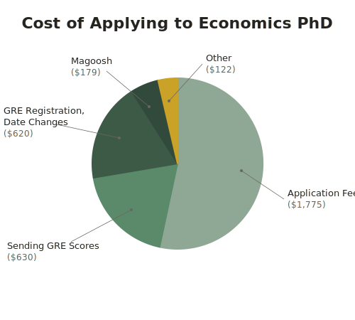

I'm happy that this is still useful 4+ years after I wrote it (while procrastinating writing my undergrad thesis). I periodically check to make sure that the links are not broken, but if you find I have missed one, feel free to email me and let me know. Also, if there are websites I am missing that you found helpful when applying to predocs, let me know and I will add them!
Last revised: December 2025
Smarter people have already said a lot of what I think needs to be said. I've included a ton of links + some original advice below.
EconRA Guide: Covers all steps of the predoc process. Highly recommend reading through.
I often get questions about learning how to code. There are many, many lessons online today, but I found software carpentry to be super helpful when I was learning almost ten years ago. Luckily it has stood the test of time and gotten even better for giving you a foundation in coding and reproducible analyses. QuantEcon has economics-specific lectures freely available as well and comes highly recommended. This Stata guide also looks great. (I'm sure this advice is horribly outdated in the age of AI but I still think there's a lot of utility in really understanding what you're doing and building an intuition on how to problem solve.)
It's genuinely hard to say what the counterfactual would be if you did not do a predoc. I think seriously considering just applying to PhD programs from undergrad is almost always worth it; talk with your undergrad advisor and be realistic about how much doing a predoc will be able to help vs how much of it is just selection. Obviously someone who is hiring predocs has an interest in you doing a predoc so be sure to talk this over with trusted advisers who are not also your future boss.
If you have an offer, talk to previous predocs of that PI and ask about work hours, expectations, stress, & general environment. Make sure that you are as informed as possible before making a decision. If someone wants to hire you, they should give you adequate time to decide and the contact info of former predocs on request and it would be a red flag if they did not.
This is two years of your life!!
What graduate programs did the previous predocs end up in? Only take a position where you would be happy with the median placement of all recent former predocs.
How many hours a week did they work on average? What kind of work do they do? What does a typical day look like?
How reasonable did they feel like the deadlines were? More generally how stressful was the environment?
How often did they meet with their PI to talk about their own research ideas, professional growth etc.?
Is there any predoc cohort / how much interaction do they have with other predocs at the institution?
What is their physical office like? Are there windows? How often are they expected to work in person versus remote?
How is the salary / stipend structured? Were they paid on time? How much of their stipend did they spend on rent?
What is health insurance like? Who covers the premium?
What opportunities do they have to take graduate-level classes during their predoc? Do they have to cover the cost? Is it for a grade or can they only audit?
What are the norms around co-authorship with predocs? How will your work be recognized?
The norms within econ don't match up with other fields. In some fields, it is the norm for RAs who contribute a significant amount of time to a project to become co-authors. In econ, this view is often discounted in favor of predocs remaining in the acknowledgments. Here are some interesting discussions of this phenomenon: 1, 2. My concern in this respect is that if there is some kind of falling out with a PI, you really only have the letter of rec as a proof of competence rather than a publication record, so it makes all of the above questions even more important prior to taking the position.
Ask if any of their friends have had a particularly good or bad experience with certain professors.
Sometimes this account is a little delayed in retweeting things, I would just search @econ_ra on Twitter to see opportunities that @ them.
Econ Job Market usually skews towards more international positions.
Fed Econ Jobs it's surprisingly hard to find this website on google, but it contains a lot of good information if you are interested in RA-ing at the Fed.
There are certain programs that regularly hire some RAs. Here are a couple:
A little info on my timeline (I applied in the fall of 2021). I started applying to predocs in mid-September. I talked to current and former predocs through the end of September. I did my first coding task at the end of September, and I made my decision during the first half of October.
SIEPR stipend (which is the same for all predocs)
2024-2025: 61k, 2023-2024: 58.5k, 2022-2023: 55k
The stipend is deposited quarterly -- the beginning of work was in early July but most people in my cohort were paid for the first time on July 30th.
I spent 1.05k on rent last year and during my second year I spent 2.1k for half of a 2b2.5br close to campus.
Health insurance with SIEPR covering the premium. I found that I didn't pay more than $20 for routine services and $100 for ER services. There is a hospital on-campus which is nice.
One grad course per quarter at Stanford covered by SIEPR (excluding summer).
Work laptop
Access to on-campus housing
In practice, this isn't quite correct; no predocs in my cohort got fall housing on-campus through Stanford's lottery. On-campus housing is quickly approaching / out-pacing the cost of off-campus housing as well. I would say for myself, one of the more stressful parts of the job is getting housing/ moving multiple times within a year and not really knowing that this would happen beforehand.
Access to on-campus amenities like libraries, gym etc.
Mentoring
Predoc programming
20 leave days and 10 holidays. Leave days are not guaranteed but negotiated with professor.
J-1 visa sponsorship / OPT eligible (I am not an international predoc, so I know less about how this works in practice)
My experience
As a predoc, my hours varied based on deadlines, but, in general, I worked 35-40 hours a week. My hours were pretty flexible; if I had a mid-afternoon slump, I could always take a break, go to the gym, and come back to finish work later. In the last year of my predoc, I met with my PI at least once, often more times per week and corresponded over email with him almost daily. My project management and econometric skills vastly improved.
I found balancing classes with work to be incredibly difficult --- much more difficult than I thought it would be --- I didn't have time outside of work and classes to do anything or work on my own ideas, and often felt like I didn't have enough time to fully appreciate what I was being taught in the courses. Going to class was also disruptive to my workflow. I didn't walk away with nothing; having the opportunity to take convex optimization with the professor who invented most of the field was particularly helpful in approaching my PhD. Courses can also be useful for predocs who feel they lack sufficient math/core econ, but that was not my situation. In the end, when I didn't take courses in my second year, I felt much better applying to PhD applications, maintaining personal relationships, hobbies, etc.
I ended up staying at Stanford for my PhD and I'm very happy with the level of support and mentorship that I have going into the PhD.
Undergrad Advice
I was never someone who always thought I would do an econ PhD. I entered college thinking I would be a lawyer (which is why I went to Wellesley over an engineering college) and wanted to major in computer science and philosophy. Took some courses, realized that while philosophy was interesting, it felt quite detached from reality. I also became less sure about my interest in all of the requirements of a computer science major. Slowly drifted towards econ as I enjoyed those courses the most, and sometime towards the end of my sophomore year and the beginning of my junior year I decided I would maybe start investing in the math I would need if I decided to do a PhD, which by the end of my time at Wellesley became a full blown math major. I also went to college during the pandemic and pre LLMs, so my experience has started to slowly drift away from the modal experience of undergrads today.
The most helpful places will be looking at the university that you are interested in and seeing if they have information about 'ideal' candidates in their application sections. Some are more explicit than others with respect to expected classes etc.
Talk to professors at your university; tell them that you are interested in pursuing a PhD in economics after you graduate. Ask what they think you should do to be best positioned to achieve that goal.
Applying to Economics PhDs
I applied to PhD programs in Economics in the AY 2023-2024. Here are a couple of pieces of advice that I have.
Advice I found online on how to approach the personal statement is contradictory at best. Don't get too bogged down in this -- talk to your recommenders and see what they think is the best approach for you.
Have as many people as possible read your application materials as soon as possible.
Have a way of tracking deadlines both for yourself and for your recommenders. I used google sheets with the following rows. I shared a version of this spreadsheet with each recommender.
Have I invited recommender
Recommender submitted
Submission Deadline
Program
yes
no
November 29th
University X Economics PhD
Apply to fee waivers for the GRE and for individual universities if you are eligible. A lot of places require that you do this in advance. When I was applying, I didn't feel like I had enough time to apply to most waivers because I didn't think about it until I was ready to submit. Here is a breakdown of my costs (I applied to 23 programs in the US and the UK across econ, finance, and public policy). The GRE costs are high because I retook it, and paid to move the date when I didn't feel prepared. The average application fee was around $85, and I received fee waivers for 3 programs.
Here are my costs by category:

Cost of applying to economics PhD programs
Apply to fellowships if you are eligible for them. They can help boost your application and provide you with better conditions as a PhD student. A couple that I can think of off the top of my head:
NSF GRFP (US citizens, nationals, or permanent residents)
GoodNotes (enable some kind of syncing so you don't risk losing your notes)
Libby (app). Borrow free audiobooks from your library! Really nice UI.
Ergonomic equipment; my arm, at times, struggles to keep up with how much I want to type, so I have invested a lot in this.
Good posture and a standing desk are the most important things for me.
I use a Dygma Defy 2 which is the only split tented keyboard I've found that is not built for hands that are much larger than mine (I ruled out Ergodox, Voyager, Moonlander, Glove 80 (anyone who says this is built for small hands is lying), Kinesis, etc.). Most of my pain is elicited from overusing my right hand especially my pinky so this keyboard allows me to move all of those keys to my thumbs. For people who don't have these issues used to be partial towards the Microsoft Sculpt which I believe InCase now has the IP for.
I also use a forearm rest connected to my desk to help support my arm.
Logitech MX Master 3. Right now I use a Logitech MX Master Anywhere 3S mouse as a left handed mouse to alleviate overuse of my right hand.
Coding & Data Visualization
This doesn't cover any basic stata/R tutorials; these are just some tools I've used in the past.
Datawrapper is a really cool no-code tool. I generally like to use R to make visualizations but this automatically creates good-looking graphs that are especially useful in presenting summary data.